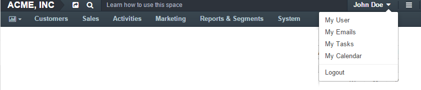

User Menu¶
On the right side of the screen, under your username, you will find the User Menu drop-down. It provides a fast way to access your user profile, calendar, mailbox, and task list. It is also used to log out of the system.
My User¶
This link opens your user profile.
My Emails¶
This link opens the My Emails page—your OroCommerce mailbox that stores all the email conversations with your customers or contacts.
The “My Emails” page contains all the emails:
- Sent to you in OroCommerce.
- Sent by you in OroCommerce.
- Collected from the external mailboxes. This may be the mailbox for which an IMAP connection has been enabled (if any), as described in the section above, or where other mailboxes are connected to your account. To collect all the newest emails, click the Sync Emails button.
Use the action buttons to process your emails in the grid.
Click the Compose button to create a new email.
My Calendar¶
This link opens your calendar. Here you can see all the important events and tasks that have deadlines. If permitted, you can also access system calendars and calendars of other users.